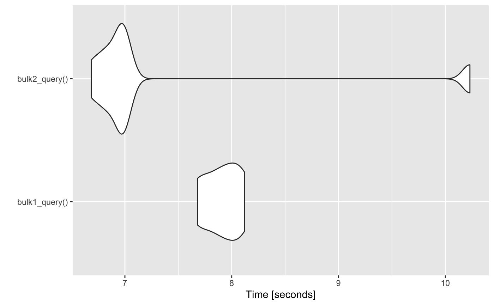

vignettes/working-with-the-bulk-apis.Rmd
working-with-the-bulk-apis.RmdFirst, load the {salesforcer} and dplyr packages and login, if needed.
For really large inserts, updates, deletes, upserts, and queries you can just add api_type = "Bulk 1.0" to most functions to get the benefits of using the Bulk API instead of the SOAP or REST APIs. The change you have to make from using the REST API to the Bulk 1.0 API as simple as adding api_type="Bulk 1.0" to your function arguments. First, let’s build a tbl_df with two new records to be created.
n <- 4 prefix <- paste0("Bulk-", as.integer(runif(1,1,100000)), "-") new_contacts <- tibble(FirstName = rep("Test", n), LastName = paste0("Contact-Create-", 1:n), My_External_Id__c=paste0(prefix, letters[1:n]))
There are some differences in the way the REST API returns response information vs. the Bulk 1.0 API. However, the changes in Salesforce are exactly the same for these two calls.
# REST rest_created_records <- sf_create(new_contacts[1:2,], object_name="Contact", api_type="REST") rest_created_records #> # A tibble: 2 x 2 #> id success #> <chr> <lgl> #> 1 0033s000013XyKjAAK TRUE #> 2 0033s000013XyKkAAK TRUE # Bulk bulk_created_records <- sf_create(new_contacts[3:4,], object_name="Contact", api_type="Bulk 1.0") bulk_created_records #> # A tibble: 2 x 4 #> Id Success Created Error #> <chr> <lgl> <lgl> <lgl> #> 1 0033s000013XyKoAAK TRUE TRUE NA #> 2 0033s000013XyKpAAK TRUE TRUE NA
To show a more lengthy example of using the Bulk 1.0 API, below is a workflow of that creates 2 records, queries them, and deletes them. This is just an example. Typically, you’d want to use the Bulk APIs over the REST or SOAP APIs when dealing with over 10,000 records.
object <- "Contact" created_records <- sf_create(new_contacts, object_name=object, api_type="Bulk 1.0") created_records #> # A tibble: 2 x 4 #> Id Success Created Error #> <chr> <lgl> <lgl> <lgl> #> 1 0033s000013XyKyAAK TRUE TRUE NA #> 2 0033s000013XyKzAAK TRUE TRUE NA # query bulk my_soql <- sprintf("SELECT Id, FirstName, LastName FROM Contact WHERE Id in ('%s')" FirstName, LastName FROM Contact WHERE Id in ('%s')", paste0(created_records$Id , collapse="','")) queried_records <- sf_query(my_soql, object_name=object, api_type="Bulk 1.0") queried_records #> # A tibble: 2 x 3 #> Id FirstName LastName #> <chr> <chr> <chr> #> 1 0033s000013XyKyAAK Test Contact-Create-1 #> 2 0033s000013XyKzAAK Test Contact-Create-2 # delete bulk deleted_records <- sf_delete(queried_records$Id, object_name=object, api_type="Bulk 1.0") deleted_records #> # A tibble: 2 x 4 #> Id Success Created Error #> <chr> <lgl> <lgl> <lgl> #> 1 0033s000013XyKyAAK TRUE FALSE NA #> 2 0033s000013XyKzAAK TRUE FALSE NA
There is one limitation to Bulk queries is that it does not support the following operations or structures of SOQL:
Salesforce has more recently introduced the Bulk 2.0 API which is supposed to be faster and have a more consistent JSON/REST based API than the Bulk 1.0 API. In some cases I have noticed that the ordering of the result records will differ from the order of the input data because the data is batched and processed asynchronously. by Salesforce instead of R. However, The Bulk 2.0 API returns every single field that was included in the call so if you have an identifying key your dataset, then it should not be a problem to join on that key with your original data to bring in the newly assigned Salesforce Id that is generated when the record was created in Salesforce. However, I have find it just seems wasteful to transfer all of the field information back after the query and have not found a significant performance improvement between the Bulk 1.0 and Bulk 2.0. Finally, note that the status field names (“Success”, “Created”, “Error”) are different from the Bulk 2.0 API.
n <- 20 prefix <- paste0("Bulk-", as.integer(runif(1,1,100000)), "-") new_contacts <- tibble(FirstName = rep("Test", n), LastName = paste0("Contact-Create-", 1:n), test_number__c = 1:n, My_External_Id__c=paste0(prefix, letters[1:n])) created_records_v1 <- sf_create(new_contacts[1:10,], object_name = "Contact", api_type = "Bulk 1.0") created_records_v1 #> # A tibble: 10 x 4 #> Id Success Created Error #> <chr> <lgl> <lgl> <lgl> #> 1 0033s000013XyLDAA0 TRUE TRUE NA #> 2 0033s000013XyLEAA0 TRUE TRUE NA #> 3 0033s000013XyLFAA0 TRUE TRUE NA #> 4 0033s000013XyLGAA0 TRUE TRUE NA #> 5 0033s000013XyLHAA0 TRUE TRUE NA #> # … with 5 more rows created_records_v2 <- sf_create(new_contacts[11:20,], object_name = "Contact", api_type = "Bulk 2.0") created_records_v2 #> # A tibble: 10 x 7 #> sf__Id sf__Created sf__Error FirstName LastName My_External_Id_… #> <chr> <lgl> <lgl> <chr> <chr> <chr> #> 1 0033s… TRUE NA Test Contact… Bulk-81819-k #> 2 0033s… TRUE NA Test Contact… Bulk-81819-l #> 3 0033s… TRUE NA Test Contact… Bulk-81819-m #> 4 0033s… TRUE NA Test Contact… Bulk-81819-n #> 5 0033s… TRUE NA Test Contact… Bulk-81819-o #> # … with 5 more rows, and 1 more variable: test_number__c <dbl>
Below is a simple performance benchmark between the Bulk 1.0 and Bulk 2.0 APIs for a small query. In general, the Bulk 2.0 should be faster. One potential reason for the implementation in R to be faster is that the entire recordset is parsed at once from a downloaded CSV of the results when using the Bulk 1.0 API. The Bulk 2.0 retrieves the same data in large batches (typically 50,000 records at a time). I would encourage users to experiment to see what works best in their Salesforce Org.
soql <- "SELECT Id, Name FROM Contact" bulk1_query <- function(){sf_query(soql, "Contact", api_type="Bulk 1.0")} bulk2_query <- function(){sf_query(soql, api_type="Bulk 2.0")} # Bulk 2.0 doesn't need object name res <- microbenchmark::microbenchmark( bulk1_query(), bulk2_query(), times=8 ) res #> Unit: seconds #> expr min lq mean median uq max neval #> bulk1_query() 7.487621 7.632726 7.779368 7.737823 7.944456 8.117313 8 #> bulk2_query() 6.658682 6.673749 6.796066 6.795567 6.819280 7.132658 8 ggplot2::autoplot(res) + ggplot2::scale_y_continuous(name="Time [seconds]", n.breaks=6)
